ГРАНИЧНІ ТЕОРЕМИ ПУАССОНА.
Граничні теореми Муавра-Лапласа суттєво погребували, щоо імовірність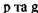_ не були близькі до 0 та 1.
Розв'язання задач схеми Бернуллі для випадку малих р проводиться ч допомогою граничної теореми Пуассона, наслідком якої являється наближена формула:
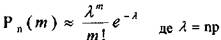
Щоб полегшити застосування цієї формули складено таблиці
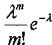
Звичайно крім малості значення р рекомендується перевіряти виконання нерівності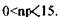 Саме для цих значень 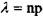 і складено
вказану таблицю. Якщо значення пр великі, то використовують відповідну формулу Муавра-Лапласа.
ПРИКЛАД: Імовірність випуску дисків підвищеної хрупкості (брак) дорівнює 0,02. Диски вкладаються в коробки по 100 штук. Визначити імовірність того, що число бракованих дисків буде не більше 2.
РОЗВ'ЯЗОК: Потрібно знайти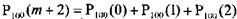
Так як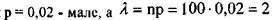знаходиться в інтервалі
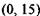 , то по формулі Пуассона маємо:
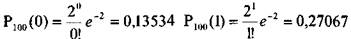
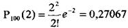
1 отже,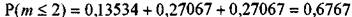,